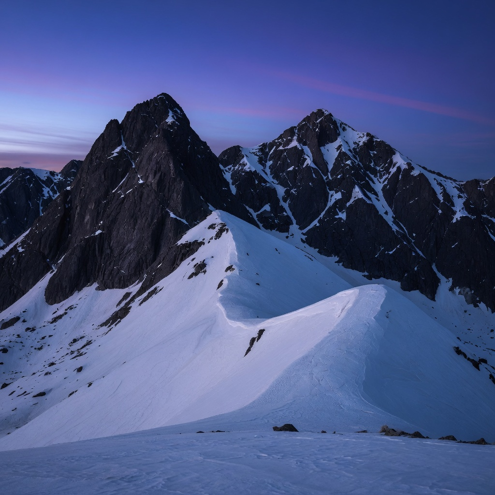
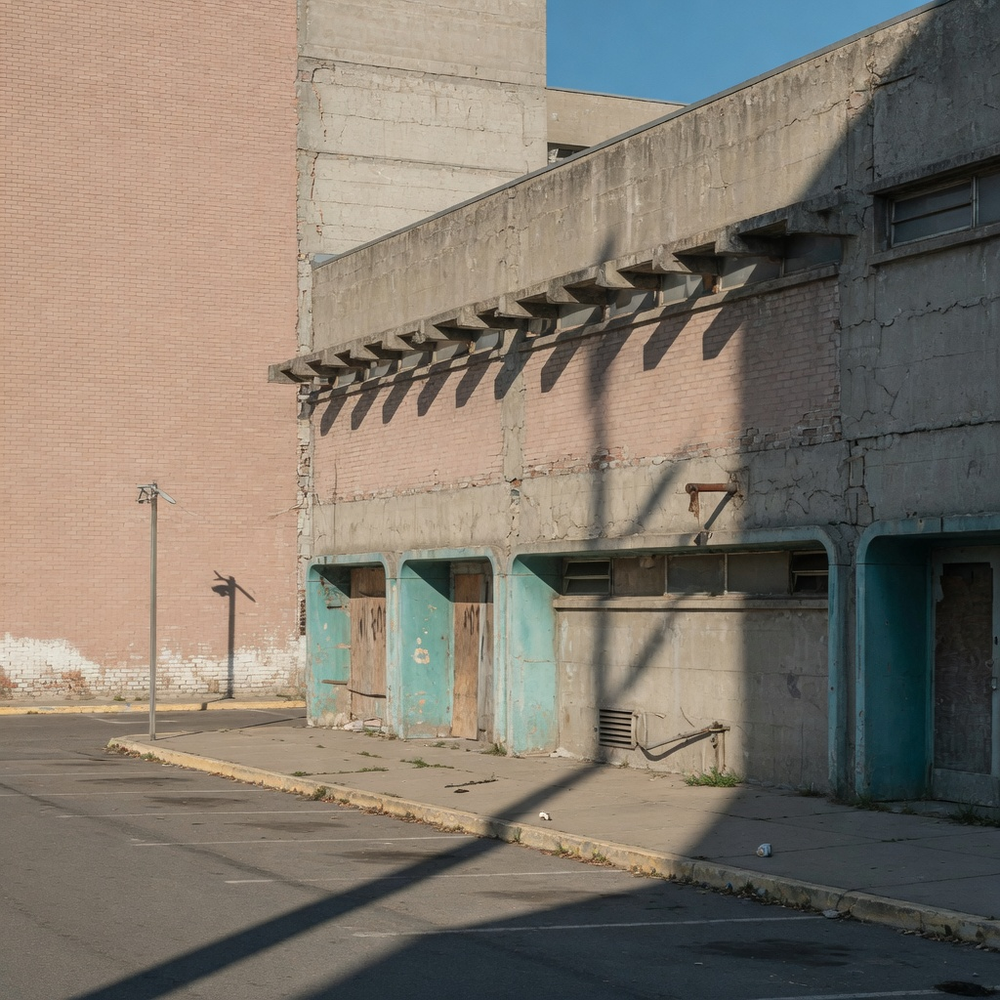
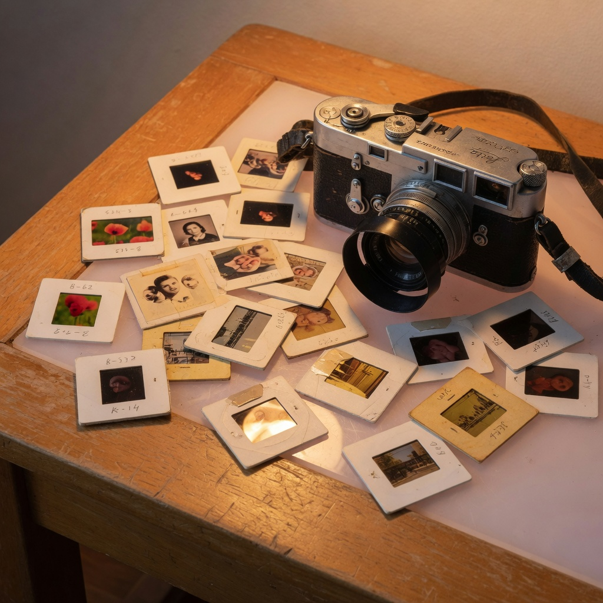
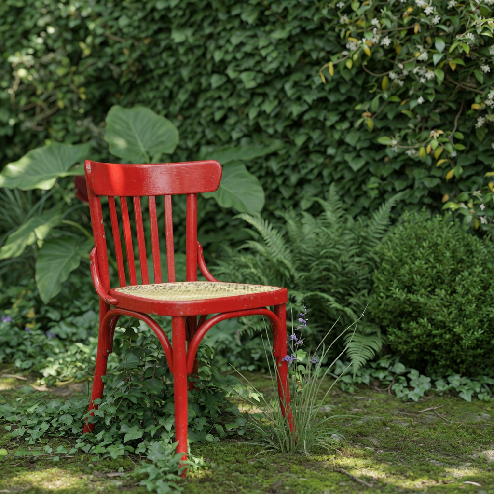

OCR search
Paddle/RapidOCR into Solr text_ocr. A URL overlay like emmejihad.wordpress.com hits wordpress. Tika MIME/EXIF rides along.
Mnemosyne · Solr 10 · ImageSpace
Point ImageCat at folders of photographs. It OCRs them, reads the metadata, builds CLIP and foreground/background indexes, and opens ImageSpace — search, similar, and Lens — on port 8090.
$ bin/imagecat index ./field-notes ./scans
A demo catalog
Nothing here is from a live collection. The grid is what ImageSpace feels like after imagecat index: tiles, OCR snippets, nested folders left intact.



ImageSpace
Paddle/RapidOCR into Solr text_ocr. A URL overlay like emmejihad.wordpress.com hits wordpress. Tika MIME/EXIF rides along.
Click a tile, get neighbors in CLIP space. Incremental FAISS, same catalog, no extra crawl.
rembg splits the subject from the scene, then CLIP on each. Chair vs garden, vessel vs shelf.
Mark + / −, Refine fits a tiny Keras head on the CLIP vectors you already have. Save as… Apply later.
Pin a thumb. Hover × to drop it. The working set stays on the left while you search.
Watch OCR 46/653, then Jaccard, CLIP, fg/bg. Status PGE EXEC, progress from the job dir.
Similar
CLIP does not need a filename match. These two aerials would sit next to each other after Similar, even if one lived under canyon1/20150416/ and the other under canyon2/.

Foreground / background
FG similar ranks on the subject. BG similar ranks on what is behind it. Same photograph, two indexes, two questions.
Lens
A lens is not a pretrained model. You label a handful of tiles. ImageCat fits a head and reranks the catalog. Apply it next week.
One command
bin/imagecat
$ bin/imagecat setup $ bin/imagecat start $ bin/imagecat index ./field-notes ./scans $ bin/imagecat status $ bin/imagecat reset --yes
Adds, does not wipe. reset empties the catalog; staging stays. Lenses stay unless --lenses.